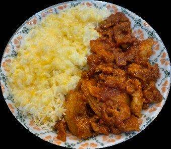
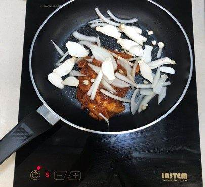
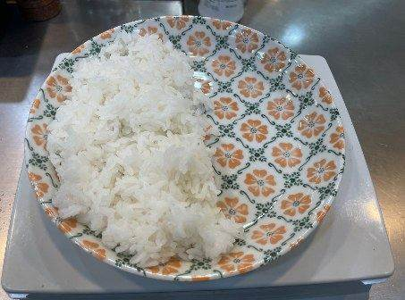
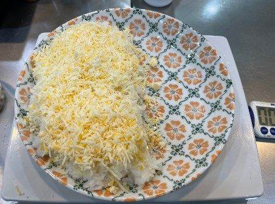
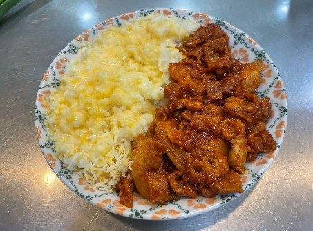
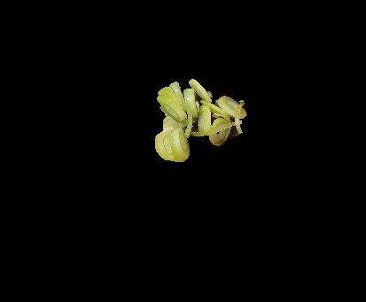
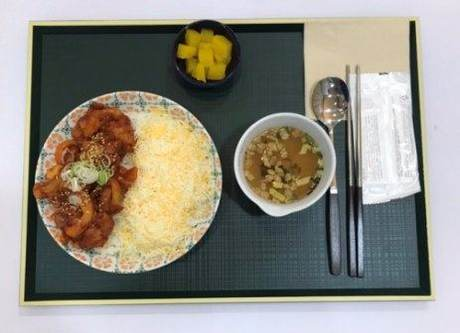

| 메뉴명 | 불삼겹치즈덮밥 |
|---|---|
| 판매가격 | 8,900원 |
| 원재료 | 아이센스 불삼겹원팩, 양파, 미니새송이, 엔젤헤어치즈, 밥, 대파, 깨 |
| 사용 부자재 | 덮밥접시 |
| 메뉴특징 | 매콤한 불닭소스와 삼겹살이 잘어우러져 있고 고소하고 부드러운 치즈까지 함께 있어 중독성 있는 덮밥 메뉴 |
조리방법

1
냉동 아이센스 불삼겹 제품의 실링 3면을 개봉한다.
(※완전히 뜯지 않기!)
냉동 아이센스 불삼겹 제품의 실링 3면을 개봉한다.
(※완전히 뜯지 않기!)

2
전자레인지에 넣고 2분간 데워준다.
전자레인지에 넣고 2분간 데워준다.

3
후라이팬에 데운 불삼겹, 미니새송이 20g, 양파슬라이스 20g을 넣고 4~5분간 볶아준다.
(인덕션 세기 4)
후라이팬에 데운 불삼겹, 미니새송이 20g, 양파슬라이스 20g을 넣고 4~5분간 볶아준다.
(인덕션 세기 4)

4
접시 왼쪽에 밥 200g을 담아준다.
접시 왼쪽에 밥 200g을 담아준다.

5
밥 위에 엔젤헤어치즈 40g을 올린 뒤, 전자레인지에 넣고 30초간 돌려 치즈를 녹여준다.
밥 위에 엔젤헤어치즈 40g을 올린 뒤, 전자레인지에 넣고 30초간 돌려 치즈를 녹여준다.

6
반대쪽에 볶은 불삼겹을 올린다.
반대쪽에 볶은 불삼겹을 올린다.

7
대파 4g, 깨를 뿌려 완성한다.
대파 4g, 깨를 뿌려 완성한다.

8
우동국물, 단무지와 함께 제공한다.
(숟가락, 젓가락, 냅킨 제공)
우동국물, 단무지와 함께 제공한다.
(숟가락, 젓가락, 냅킨 제공)